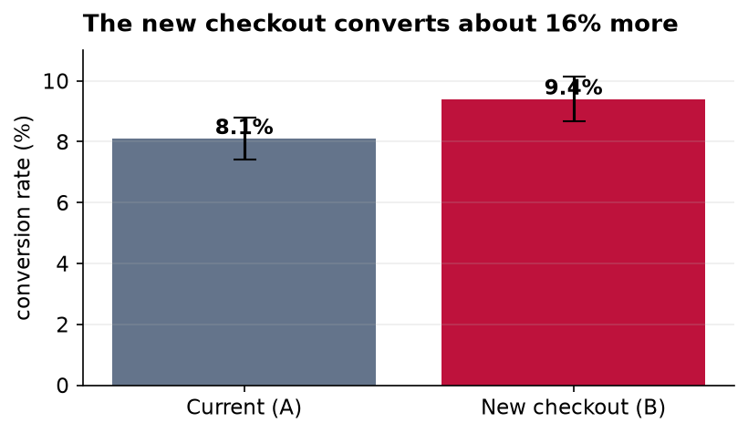

Should We Ship the New Checkout?
An experiment readout: the result, the uncertainty, and a clear recommendation.
Recommendation: yes, ship it
We should roll out the new checkout. In a clean, evenly split test, it lifted the share of visitors who completed a purchase from 8.1 percent to 9.4 percent. That is a relative improvement of about 16 percent, and the evidence that it is a real effect, not luck, is strong. There is a modest caution about the exact size of the win, which I explain below, but the direction is clear and positive, and the downside of shipping is low.
What we did, in plain terms
For two weeks we randomly showed half of our visitors the current checkout and the other half a redesigned one, about 6,000 people in each group. Because visitors were assigned at random, the two groups are alike in every respect except which checkout they saw, so any difference in how often they bought can fairly be credited to the design. Then we simply compared the purchase rates.
What we found

The new version won: 9.4 percent of its visitors bought, against 8.1 percent for the current one. The thin bracket on top of each bar is its confidence interval, the range where the true rate most plausibly sits. The two brackets barely overlap, which is a visual hint that the difference is real. A formal test confirms it: the probability of seeing a gap this large purely by chance, if the two designs were actually equal, is about 1 in 85 (a p-value of 0.012). By the usual standard, that counts as statistically significant.
The one honest caveat
Being confident the new checkout is better is not the same as knowing exactly how much better. Our best estimate of the lift is 1.3 percentage points, but the range consistent with the data runs from about 0.3 up to 2.3 points. In other words, the improvement is very likely real but could be anywhere from small to solid. I would treat the headline 16 percent as an optimistic figure and plan around something more conservative. Two smaller cautions: the test ran only two weeks, so a longer look would rule out a novelty effect, and we measured purchases only, so we should watch refunds and support tickets after launch to be sure the extra sales stick.
Bottom line
Ship the new checkout, expect a real but modest gain, and keep an eye on the numbers for a few weeks after rollout to confirm the lift holds.